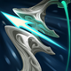

起手組件
 長劍
長劍吉茵珂絲以長劍開始組雲陶狂箭；有餘額可補合成組件或鞋子，不把起手列為第六件成裝。

校正至 7.3c · 2026-10-25。Tier與配置是本站的模式策略判斷，不是官方勝率排名。
起手組件 → 一階鞋或首件核心（依壓力調整）→ 核心成裝 → 鞋子升級 → 情境後續裝。五件成裝加一雙鞋；鞋子兩張圖表示升級前後，不是同時購買兩雙。
吉茵珂絲以長劍開始組雲陶狂箭；有餘額可補合成組件或鞋子，不把起手列為第六件成裝。

吉茵珂絲：以普攻累積暴擊率並在接戰時取得攻速；適合能安全持續普攻的路線，不把尚未疊滿視為滿暴擊。

吉茵珂絲：敵人同時進入射程時分散普攻壓力並帶出命中特效；單一目標不保證同等收益。

吉茵珂絲：強化已成形暴擊路線；需要與暴擊來源配合，不將本裝當成攻速或續航裝。

吉茵珂絲：處理物防前排的暴擊穿透格；需要重創時以致死宣告取代，而不是兩件一起購買。

吉茵珂絲：以物攻與普攻吸血改善持續對拼；不是暴擊裝，也不把普攻吸血描述為所有技能都能同額吸血。

前中期直接補攻速，讓迷你砲與致命節奏更快進入輸出節奏。

吉茵珂絲：升級普攻鞋線，補攻速、普攻吸血與接戰移速；依輸出窗口安排，不和第二雙鞋同時裝備。

無位移射手的核心保命手段。

長團戰與擊殺延長時間非常契合狂躁後的追擊與拉扯。

ARAM 長時間互毆更容易疊滿攻速，並利用額外射程安全輸出。

強化高頻普攻的命中傷害，對前期反覆換血很直接。

敵方多數時間維持較高血量時即可增傷，適合先打前排的輸出方式。

ARAM 擊殺與士兵參與頻繁，攻速層數成長速度快。

單線團戰助攻密度高，能比召喚峽谷更快疊滿適性能力。
1 技 > 2 技 > 3 技
ARAM 開局三個基礎技能各點 1 級，之後主升 1 技、次升 2 技；大絕能點就點。
先用火箭射程摸血與清線，但不要為了消耗把魔力一次打空。三技優先留在自己或後排附近，專門防雪球進場、突進與強開。
衝擊火炮與芮蘭颶風箭成形後，站在前排後方攻擊最近且安全的目標。ARAM 的敵人站位更集中，火箭與分裂弩箭可以持續打出多人傷害。
不要因為被動觸發就直接衝進人群；先利用跑速重新站位，再視距離切迷你砲追擊。大絕優先收殘血或補遠距離傷害，讓第一個擊殺更容易轉成連續重置。
先用雲陶建立攻速與暴擊成長，颶風箭服務火箭團戰；保留無盡、穿透、續航分工，不再以移除的磁性雷射槍作核心。

敵方治療／吸血很多
吉茵珂絲：同時提供物理穿透與重創；和多明尼克的問候、席利妲咒怨擇一，不把多件穿透裝當作預設。

敵方高生命前排很多
吉茵珂絲：以普攻與命中特效處理高生命目標並補續航；沒有安全普攻窗口時不能靠單件裝硬打。

需要額外位移保命
面對強開或需要調整站位時，用主動位移換取容錯。
標準 ARAM 最後可追溯倍率：目前資料軌跡顯示吉茵珂絲 ARAM 造成傷害 -10%，承受傷害 +5%；7.2b 沒有再對吉茵珂絲 ARAM 修正。 本輪核對至7.3c，未以符文大亂鬥倍率覆蓋；官方未提供本英雄完整新版倍率總表，若遊戲內不同以當局模式增益為準。
符文大亂鬥以後排普攻輸出為主。先看遊戲卡片下方的官方分類，再進入對應分類比較 S+／S／A，最後依增幅方向調整出裝。
實戰使用方式：看遊戲增幅卡片下方的官方分類 → 點相同分類 → 優先看 S+／S／A；再依本局增幅方向選擇對應出裝路線。
核心
高頻普攻、命中特效與攻速循環最符合吉茵珂絲。
核心
暴擊是吉茵珂絲最穩定的主要輸出方向。
高適配
多數能放大普攻、跑速或連續輸出。
高適配
目前英雄系增幅對吉茵珂絲整體收益偏高。
適配
無位移射手很需要走砍與拉扯能力。
適配
二技與大絕能利用部分技能增幅，但不是主軸。
抽到普攻、暴擊、射程或多重投射增幅
沿用標準 ARAM 核心，但有暴擊強化時把無盡之刃提前；這是最穩定、最適合吉茵珂絲火箭範圍輸出的路線。 本路線已同步7.3c的一般裝備；增幅專屬替換另依抽卡決定。
吉茵珂絲：以普攻累積暴擊率並在接戰時取得攻速；適合能安全持續普攻的路線，不把尚未疊滿視為滿暴擊。
吉茵珂絲：敵人同時進入射程時分散普攻壓力並帶出命中特效；單一目標不保證同等收益。
吉茵珂絲：強化已成形暴擊路線；需要與暴擊來源配合，不將本裝當成攻速或續航裝。
吉茵珂絲：處理物防前排的暴擊穿透格；需要重創時以致死宣告取代，而不是兩件一起購買。
吉茵珂絲：以物攻與普攻吸血改善持續對拼；不是暴擊裝，也不把普攻吸血描述為所有技能都能同額吸血。
前中期直接補攻速。
吉茵珂絲：升級普攻鞋線，補攻速、普攻吸血與接戰移速；依輸出窗口安排，不和第二雙鞋同時裝備。
抽到攻速、重複命中、命中特效或敵方前排很多
把傷害重心從單次暴擊改成高頻命中特效，適合增幅能重複觸發普攻效果，或敵方有多名高生命前排的對局。
吉茵珂絲：以普攻與命中特效處理高生命目標並補續航；沒有安全普攻窗口時不能靠單件裝硬打。
吉茵珂絲：敵人同時進入射程時分散普攻壓力並帶出命中特效；單一目標不保證同等收益。

吉茵珂絲：普攻命中特效路線提高持續輸出；需配合能穩定普攻的距離，不等同純暴擊爆發路線。

敵方法術爆發高時兼顧攻速與魔抗。
吉茵珂絲：處理物防前排的暴擊穿透格；需要重創時以致死宣告取代，而不是兩件一起購買。
加快命中特效觸發。
吉茵珂絲：升級普攻鞋線，補攻速、普攻吸血與接戰移速；依輸出窗口安排，不和第二雙鞋同時裝備。
敵方強開／刺客多，且增幅沒有提供足夠保命
核心輸出不變，但用主動位移與復活換取輸出時間。符文大亂鬥傷害上限更高，活到第一個擊殺往往比多一件純輸出更重要。

吉茵珂絲：充能攻擊提供一次延伸射程的接觸機會；不提供舊磁性雷射槍的連鎖清線，也不是永久增程。
吉茵珂絲：敵人同時進入射程時分散普攻壓力並帶出命中特效；單一目標不保證同等收益。
吉茵珂絲：強化已成形暴擊路線；需要與暴擊來源配合，不將本裝當成攻速或續航裝。
主動位移用來躲強開或調整被動觸發後的位置。

後期提供一次復活，避免被單點爆發直接結束團戰。
維持必要攻速。
吉茵珂絲：升級普攻鞋線，補攻速、普攻吸血與接戰移速；依輸出窗口安排，不和第二雙鞋同時裝備。
分類與單卡評級是本站條件式建議。新卡完整效果未核實時不補造數值；當局抽到的卡片會改變優先順序。
7.3c／2026-10-25：本英雄標準ARAM重新核對五件成裝、鞋線、符文、技能用途與模式差異。共通裝備採7.3改版並累計7.3a/b差異；7.3c新倍率只套用符文大亂鬥。Tier為本站單線5v5判斷，並非官方勝率排名。